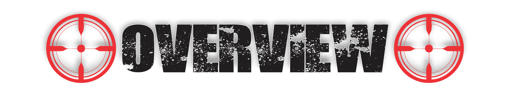
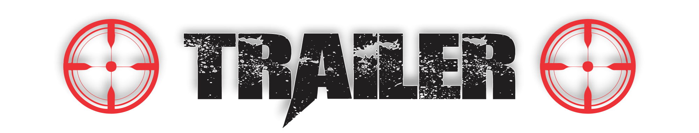
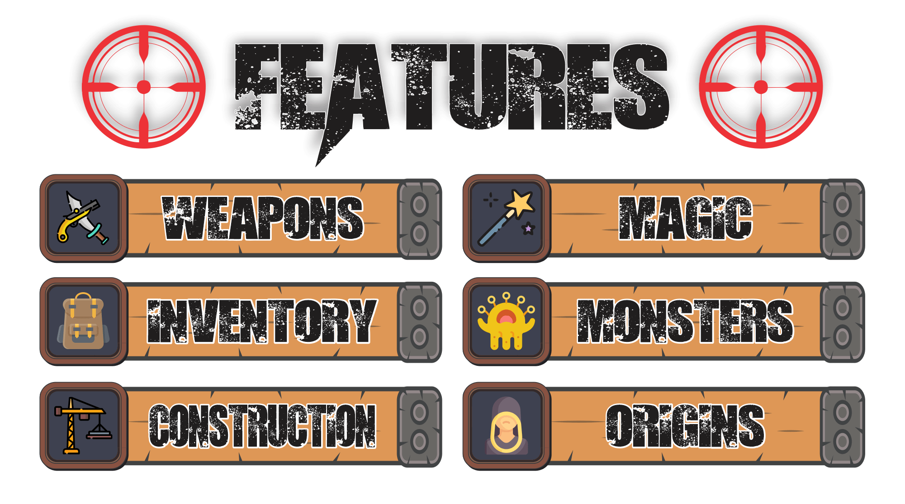

Like shooters but can't find MC fun enough? Have a few friends who want a more fun way to play Minecraft with you? Want a faster paced game than the vanilla experience? Want more battle strategies inspired by several popular games of the genre?

Now you can play with the ultimate balance of tech, environments, structures, all with amazing performance* and abilities!
This mod-pack is a project I put together to put more of an adventure shooter genre spin on the standard Minecraft. Pop caps, build labs, and sling magic on your path to glory!
Create perilous and mechanical maps and multiplayer gun battle scenarios with the same Minecraft sense of infinity expanded!
Level-up yourself with tools, enchantments, and choose your Origin to create your own preferred style of play! Many possibilities in player build!
Build fast and fight faster with improvements to crafting, mining, parkour, travel and building!
Explore expanded biomes, beautiful structures, and dimensions of ambient horror sure to entertain the ears and eyes!
More visual effects, physics, weapons, inventory pets, a few tweaked recipes, and technology!
Discover ancient beasts of a forgotten time of fantasy crossed with sci-fi!
Balanced gun-play and melee combat for rewarding technique!
Make it easy to personalize your play style, choose your goal and rip and tear your way toward victory!


*Optifine 1.16.5 G8 is compatible and required for best performance. Please report any issues you find to the Issues tab!
Lighting performance ups can be optionally installed using the mod here: Release Better experimental compatibility for Create · AeiouEnigma/Starlight (github.com)
This fork of Starlight is compatible with Create. This should also accelerate your Dedicated Server pack's chunk gen performance.
Optimized and automatically set for play at 16 chunk distance. Use at least a 4 thread CPU to play, and gtx 780 or higher GPU to achieve playable frames (30 to 60+ fps) with BSL. Lower end CPUs and GPUs can run without shaders at similar framerates.
Allocate about 6 GB of RAM to avoid eventual memory related crashes. KBP Classic requires at least 4GB.